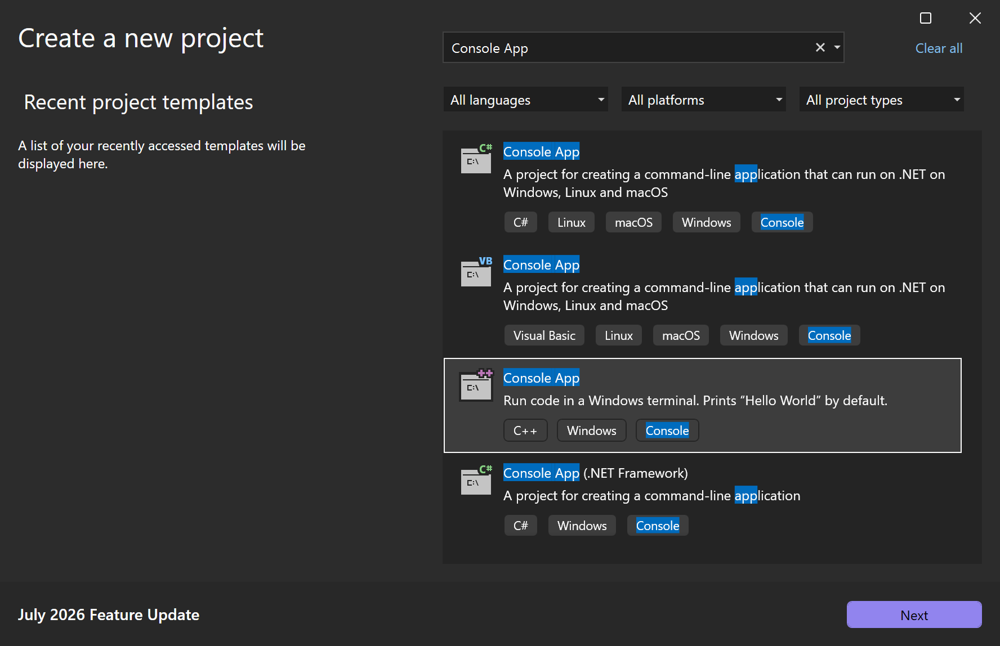
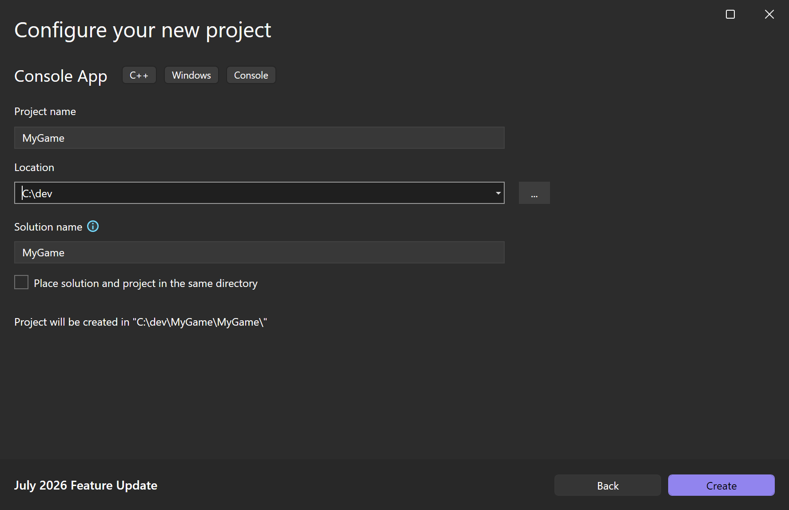
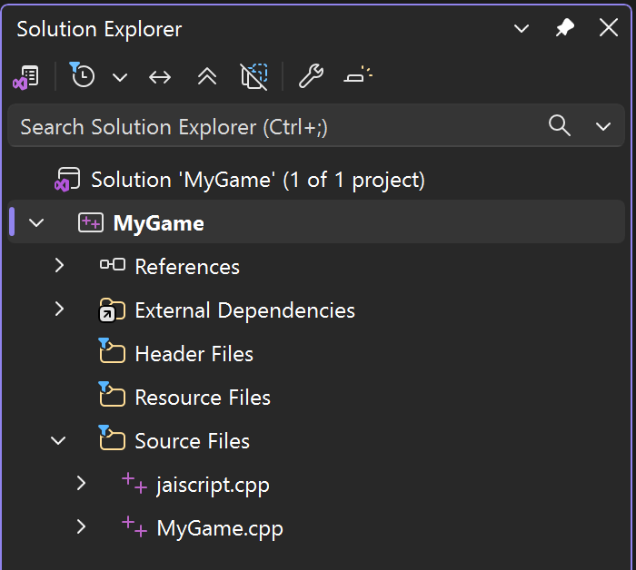
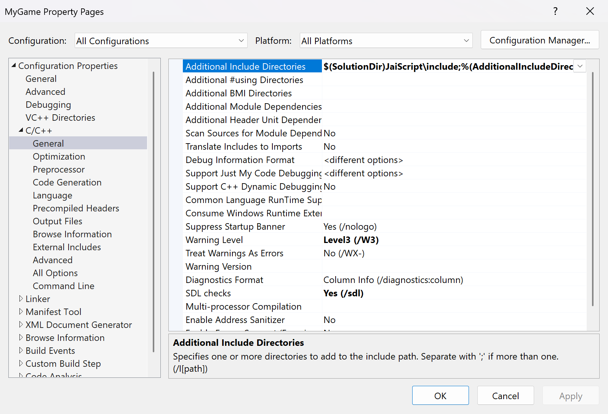
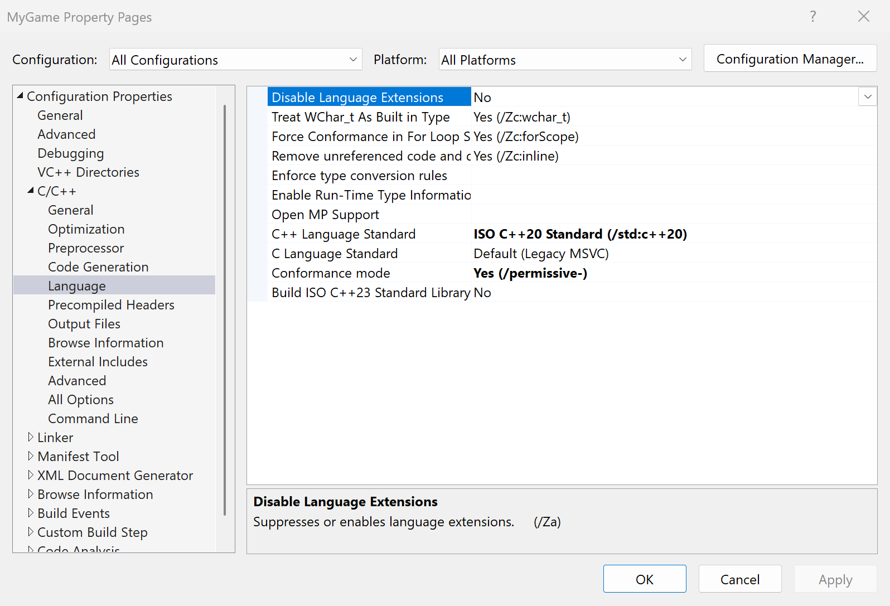
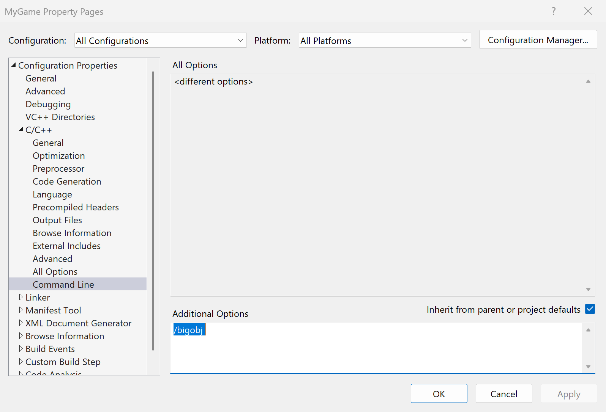
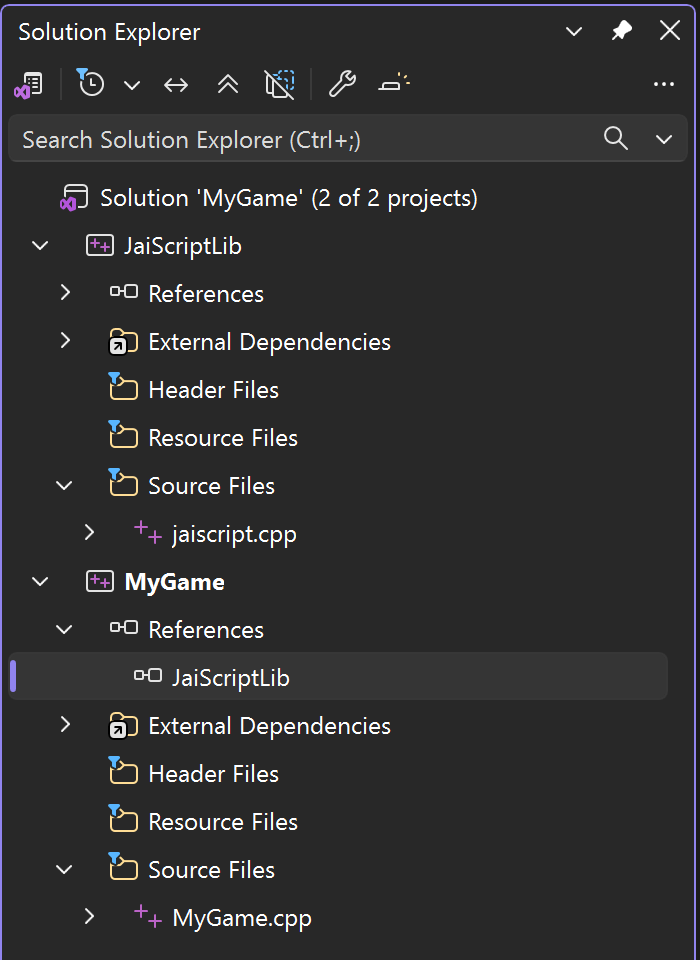
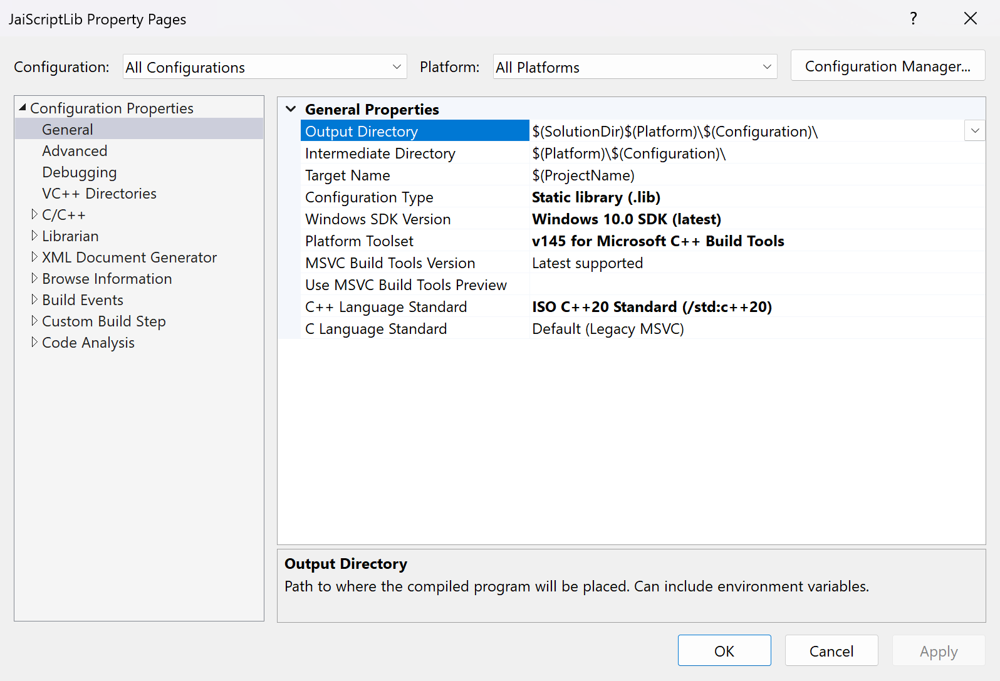
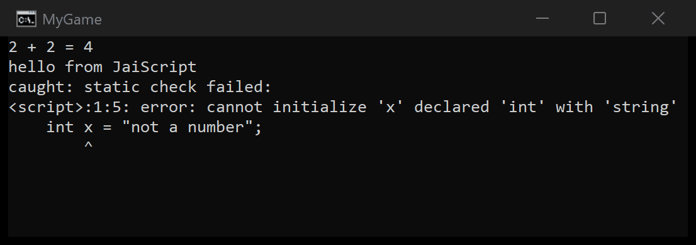
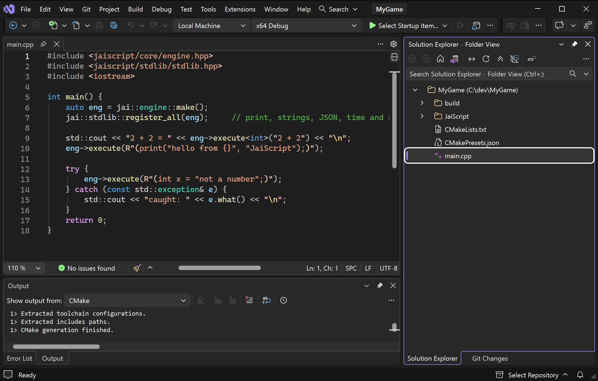

Visual Studio, Step by Step
From a fresh Windows machine to a C++ program that runs a script, with Visual Studio 2026 (version 18) or 2022 (version 17). Install Visual Studio once, then take one of two routes:
- Route A, a Visual Studio project: the Console App template, one JaiScript file added and three properties set, or the same file in a static library project of its own. Take this one if you have not used CMake.
- Route B, a CMake folder: three small files opened with File → Open → Folder, and nothing to set by hand.
Both end with the same program. Building JaiScript into a Host explains each setting they use.
1. Install Visual Studio
- Download Visual Studio Community, the free edition, from visualstudio.microsoft.com and run the installer. Any other edition works the same way.
- On the Workloads tab, tick Desktop development with C++.
- Keep the components it selects: the MSVC compiler, a Windows SDK, and C++ CMake tools for Windows, which route B uses.
- Click Install.
Screenshot to come: the Visual Studio Installer's Workloads tab with Desktop development with C++ ticked and the Installation details panel listing MSVC, the Windows SDK and C++ CMake tools for Windows.
Route A: a Visual Studio project
A1. Create a Console App
- Choose File → New → Project, or Create a new project on the start window.
- Search for Console App and pick the C++ one (tagged C++, Windows, Console). Click Next.
- Name it
MyGame, choose a location (C:\devon this page) and click Create.
Visual Studio makes a solution folder with the project folder inside it:
MyGame.slnx the solution (MyGame.sln in Visual Studio 2022)
MyGame\
MyGame.vcxproj the project
MyGame.cpp main



A2. Put JaiScript beside the solution
JaiScript goes in the folder that holds the solution file, in a folder named JaiScript. With Git, in a
terminal:
cd C:\dev\MyGame
git clone https://github.com/Devacor/jaiscript.git JaiScriptWithout Git, open github.com/Devacor/jaiscript, choose
Code → Download ZIP, extract it, rename the jaiscript-main folder to
JaiScript and move it into C:\dev\MyGame. Either way the solution folder ends up like this:
MyGame.slnx
JaiScript\
include\ the headers
source\ jaiscript.cpp and the files it includes
...
MyGame\
MyGame.vcxproj
MyGame.cppA3. Add JaiScript to the solution
JaiScript compiles from one file, source\jaiscript.cpp, which includes every other JaiScript source
file. Put that file in MyGame itself, or in a static library project that MyGame links:
jaiscript.cpp becomes one of MyGame's own source files. This is the shortest setup, and JaiScript always
compiles with the same runtime library and defines as your code. MyGame's other settings reach it too: its warning
level, its precompiled header, its whole-program optimization.
- In Solution Explorer, right-click Source Files under MyGame and choose Add → Existing Item.
- Pick
C:\dev\MyGame\JaiScript\source\jaiscript.cppand click Add. Add no other JaiScript file. - Right-click the MyGame project and choose Properties.
- At the top of the dialog, set Configuration to All Configurations and Platform to All Platforms, so Debug and Release both get the settings.
- Set these three, then click OK:
| Page | Property | Value |
|---|---|---|
| C/C++ → General | Additional Include Directories | $(SolutionDir)JaiScript\include |
| C/C++ → Language | C++ Language Standard | ISO C++20 Standard (/std:c++20) or later |
| C/C++ → Command Line | Additional Options | /bigobj |








/bigobj in Additional Options.JaiScript builds in a project of its own, JaiScriptLib, and MyGame links the library it makes. MyGame's warning level and precompiled header never reach JaiScript's code, and a second program in the solution links the same library instead of compiling it again.
- In Solution Explorer, right-click Solution 'MyGame' and choose
Add → New Project. Pick Empty Project (tagged C++, Windows, Console), name it
JaiScriptLiband click Create. - Right-click Source Files under JaiScriptLib, choose Add → Existing Item,
pick
C:\dev\MyGame\JaiScript\source\jaiscript.cppand click Add. Add no other JaiScript file. The C/C++ property pages appear once the project holds a source file. - Right-click the JaiScriptLib project and choose Properties. Set Configuration to All Configurations and Platform to All Platforms, set these four, then click OK:
| Page | Property | Value |
|---|---|---|
| General | Configuration Type | Static library (.lib) |
| C/C++ → General | Additional Include Directories | $(SolutionDir)JaiScript\include |
| C/C++ → Language | C++ Language Standard | ISO C++20 Standard (/std:c++20) or later |
| C/C++ → Command Line | Additional Options | /bigobj |
- Under MyGame, right-click References and choose Add Reference. Tick JaiScriptLib and click OK. MyGame now builds the library first and links it. Solution Explorer shows the startup project in bold: if that is JaiScriptLib, right-click MyGame and choose Set as Startup Project.
- Right-click the MyGame project and choose Properties. Under All
Configurations and All Platforms, set C/C++ → General → Additional Include
Directories to
$(SolutionDir)JaiScript\includeand C/C++ → Language → C++ Language Standard to ISO C++20 Standard or later, then click OK.




The two projects have to agree on what shapes the library: both build the same configuration (the reference pairs
Debug with Debug and Release with Release), both keep the same C/C++ → Code Generation → Runtime Library,
and a JaiScript define such as JAISCRIPT_ENABLE_DEBUGGER goes in both or in neither. The two templates
start out agreeing.
Check the language standard even if you do not change it: Visual Studio 2022's templates start at Default (ISO C++14), which cannot compile JaiScript. Leave everything else as the template set it.
A4. Run a script from main
Replace everything in MyGame.cpp with:
#include <jaiscript/core/engine.hpp>
#include <jaiscript/stdlib/stdlib.hpp>
#include <iostream>
int main() {
auto eng = jai::engine::make();
jai::stdlib::register_all(eng); // print, strings, JSON, time and more
std::cout << "2 + 2 = " << eng->execute<int>("2 + 2") << "\n";
eng->execute(R"(print("hello from {}", "JaiScript");)");
try {
eng->execute(R"(int x = "not a number";)");
} catch (const std::exception& e) {
std::cout << "caught: " << e.what() << "\n";
}
return 0;
}2 + 2 = 4
hello from JaiScript
caught: static check failed:
<script>:1:5: error: cannot initialize 'x' declared 'int' with 'string'
int x = "not a number";
^execute<int> runs the text and returns the value of its last expression as an
int. A script that fails to check or to run throws, and the message says where.
A5. Build and run
Press Ctrl+F5 (Debug → Start Without Debugging). The first build compiles the
library and takes a minute or two; after that jaiscript.cpp recompiles only when a JaiScript file
changes. The console window shows the output above.


Before you measure anything, switch the toolbar's configuration from Debug to Release. A Debug build checks the library's invariants as it goes and runs script many times slower.
A6. Optional: faster Release builds
The Console App template turns on whole-program optimization for Release, so every Release build re-links the whole library: a minute or more, even after a one-line edit to your own code. To link in seconds instead:
- In Solution Explorer, right-click
jaiscript.cppand choose Properties. - Set Configuration to Release and Platform to All Platforms.
- Set C/C++ → Optimization → Whole Program Optimization to No, and click OK.
Scripts then run a few percent slower. Turn it back on for the build you ship.
If the build fails
| The first error | The fix |
|---|---|
C1083: Cannot open include file: 'jaiscript/core/engine.hpp' | The include
directory is missing from the project the error names (A3), or the folder is misplaced: C:\dev\MyGame\JaiScript must hold
include\ and source\ directly, not another jaiscript-main\ folder from the
ZIP. |
LNK2019: unresolved external symbol naming jai:: functions, then
LNK1120 | jaiscript.cpp is not in the project, or MyGame has no reference to JaiScriptLib (A3). |
C1128: number of sections exceeded object file format limit: compile with /bigobj | Add
/bigobj to the project that holds jaiscript.cpp (A3). |
C7525: inline variables require at least '/std:c++17', or C2039: 'same_as':
is not a member of 'std' | The language standard is below C++20 (A3). |
C1010: unexpected end of file while looking for precompiled header | Your project uses
precompiled headers (pch.h). Open the Properties of jaiscript.cpp itself and set C/C++
→ Precompiled Headers → Precompiled Header to Not Using Precompiled Headers. |
| Builds in Debug but not in Release, or the other way round | A property was set with only one configuration selected. Set it again under All Configurations. |
Optional: debug scripts from VS Code
To set breakpoints in scripts, select the Debug configuration in the Properties dialog and add
JAISCRIPT_ENABLE_DEBUGGER to C/C++ → Preprocessor → Preprocessor Definitions. Leave it out of
Release. With the static library setup, add it to both projects. Debugging covers the attach.
Route B: a CMake folder
Visual Studio opens a folder that holds a CMakeLists.txt directly. Linking the
JaiScript::jaiscript target brings the include path, C++20 and /bigobj, so there is no
Properties dialog to fill in.
B1. Make the folder
CMakeLists.txt
CMakePresets.json
main.cpp the program from A4
JaiScript\ cloned or unzipped as in A2B2. Write CMakeLists.txt
cmake_minimum_required(VERSION 3.20)
project(MyGame CXX)
add_subdirectory(JaiScript)
add_executable(MyGame main.cpp)
target_link_libraries(MyGame PRIVATE JaiScript::jaiscript)B3. Write CMakePresets.json
The presets are the configurations Visual Studio offers in its toolbar: here x64 Debug and x64 Release, built with MSVC and the Ninja that comes with the workload.
{
"version": 3,
"configurePresets": [
{
"name": "windows-base",
"hidden": true,
"generator": "Ninja",
"binaryDir": "${sourceDir}/build/${presetName}",
"architecture": { "value": "x64", "strategy": "external" },
"cacheVariables": { "CMAKE_CXX_COMPILER": "cl.exe" }
},
{
"name": "debug",
"displayName": "x64 Debug",
"inherits": "windows-base",
"cacheVariables": { "CMAKE_BUILD_TYPE": "Debug" }
},
{
"name": "release",
"displayName": "x64 Release",
"inherits": "windows-base",
"cacheVariables": { "CMAKE_BUILD_TYPE": "Release" }
}
]
}B4. Open the folder and run
- Choose File → Open → Folder and pick
C:\dev\MyGame. Visual Studio configures the project and shows CMake's messages in the Output window. - In the toolbar, pick x64 Debug as the configuration and MyGame.exe as the startup item.
- Press Ctrl+F5. The output is the same as in A5.
The program lands in build\debug\MyGame.exe, or build\release\ for x64 Release.
JaiScript builds as a library of about fifty files compiled in parallel, and an edit to one of them rebuilds only that
file.

